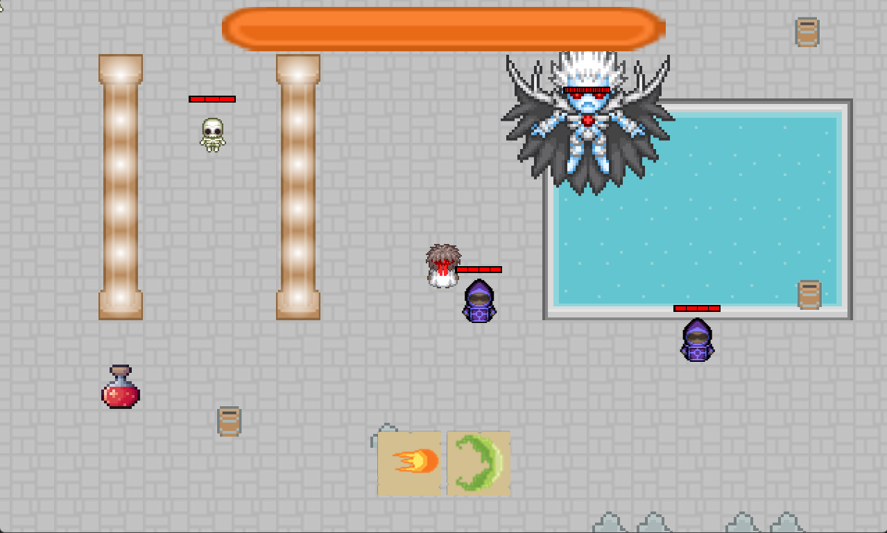
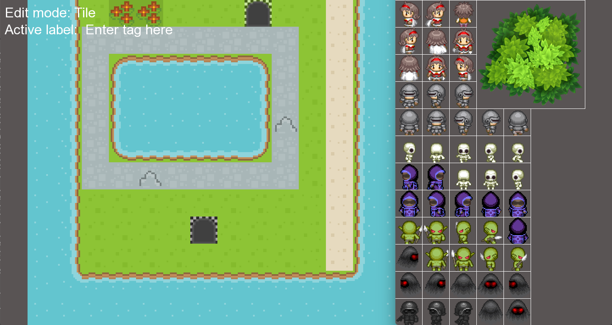
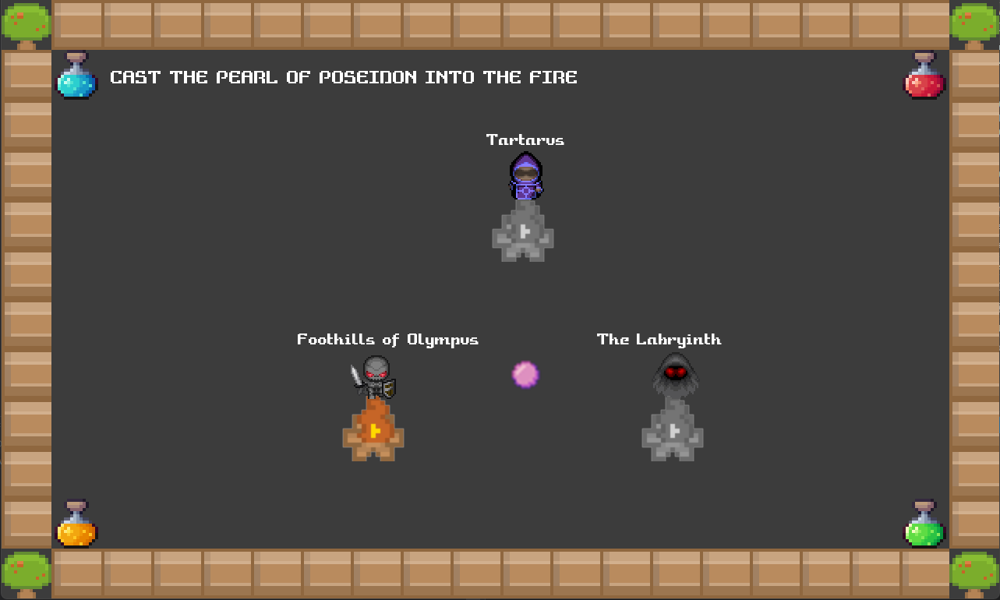
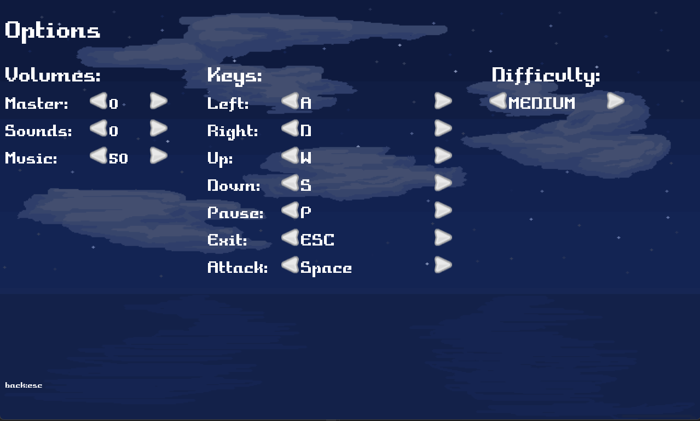
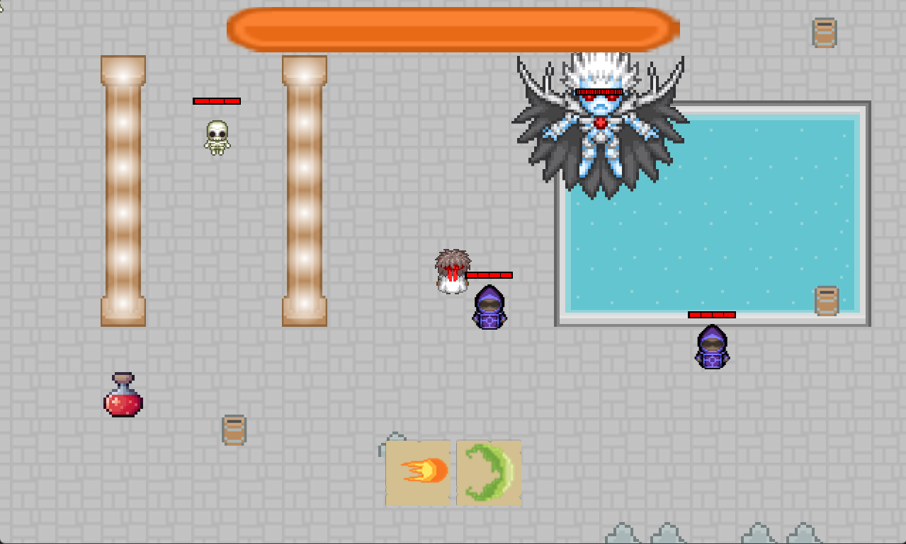
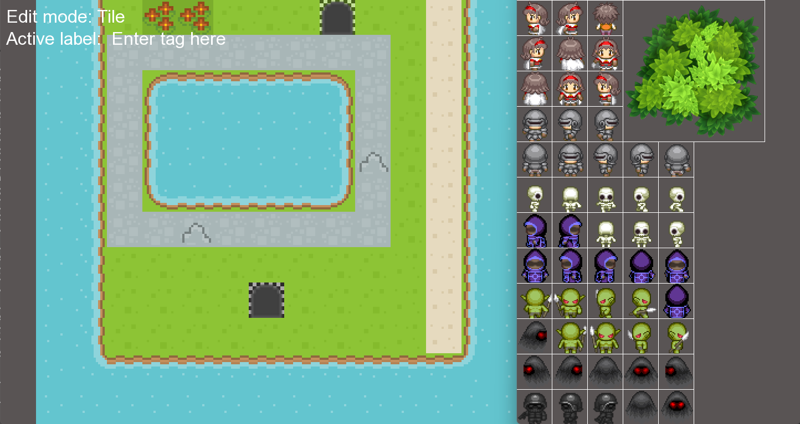
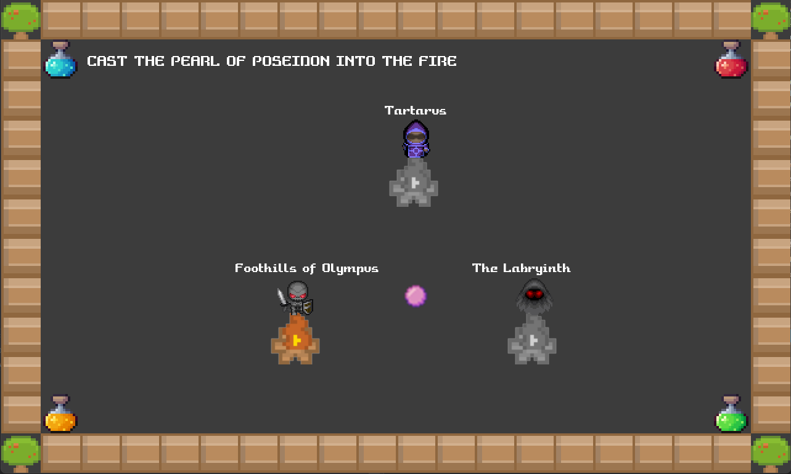
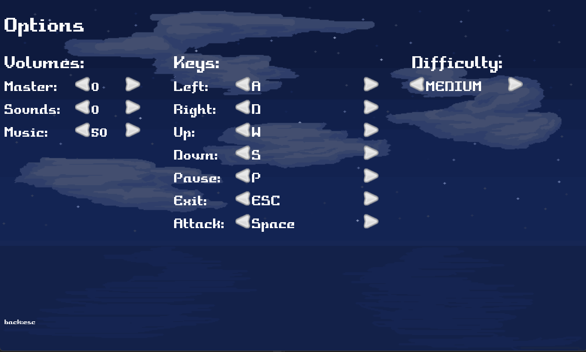

In my most previous term of school, I was fortunate enough to be able to take the course CS4300 at Memorial University, taught by Professor Dave Churchill. The cool thing about the course is that it is entirely based around projects and assignments, with the goal of the lectures being to familiarize us with various game development concepts. These concepts were then formalized in the four assignments of the course. Each assignment built upon the codebase of the last, which we were then able to leverage in completing the final project.
The course used the SFML C++ library to abstract away platform-specific APIs relating to graphics, windows, sound, and asset loading, and the main concept that was taught was the https://en.wikipedia.org/wiki/Entity_component_system paradigm of structuring applications (specifically games), and how using a data-oriented approach can improve performance, and allow for a more nuanced understanding of how data is structured in memory.
For the final project, me and the other members of my group decided to build a top-down Zelda clone called Atlantica (the name paying homage to our home, an island in the Atlantic Ocean).
Atlantica contains a fully-fledged level editor, a main menu, settings menu, and Overworld scene where the level is selected. There is an inventory system, parallax, multiple enemy types, a boss battle, sticky tiles, and many other features.
One lesson we all learned upon the completion of the project was of the importance of time management. Even though we had budgeted time to work on the game, our pace was still not fast enough, considering that we had four other final exams to write the week the project was due, along with all the studying that came with it. One important lesson I think I personally learned from completing the game is the importance of not only time management, but also of prioritization. When I should've been working on the game, I was studying for exams where I had already attained enough knowledge to get the grade I wanted in the course, and on the exam. I should have focused more time on the game earlier to build momentum, which would have reduced the grind in the last 48 hours to get the game to a complete state.
All in all, I was really glad to be able to take this course, and feel like I obtained a lot of technical knowledge of game development, ECS, and designing large complex applications, and improved my soft skills in time management, prioritization, working in a group, and planning.
Below are some photos/gifs of the game:
 






